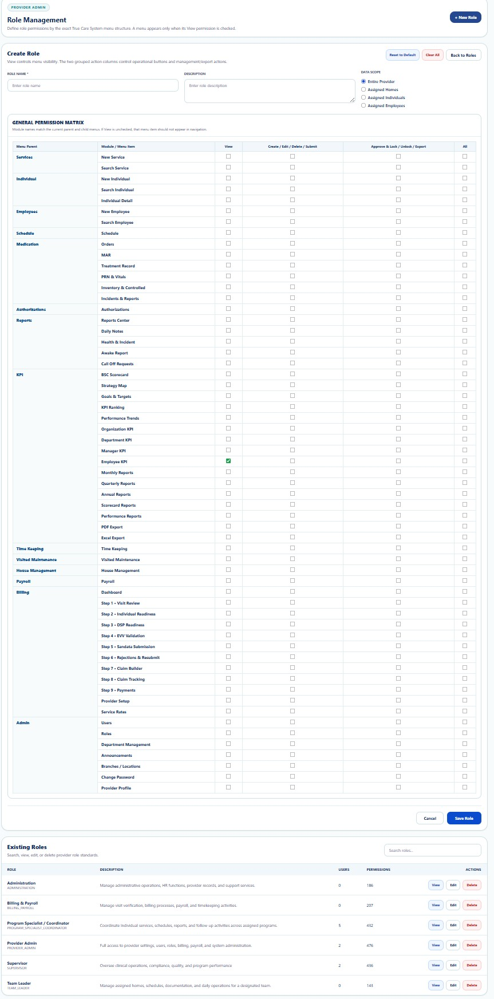

PROVIDER ADMINISTRATION
Role Management
Define, review, and maintain role-based permissions and minimum-necessary administrative access.
Privacy, security, and administrative access notice
Administrative pages may display workforce identity, Provider identifiers, contact information, organizational assignments, role permissions, and access-control data. Public screenshots use redacted or demonstration information.
Purpose
Role Management is the central access-governance workspace for defining what each workforce role may view, create, update, approve, export, or administer. It supports Provider-level access control across operational, clinical, financial, payroll, support, and compliance workflows.
Core Controls
- Role definition: maintain clear role names and approved business purpose.
- Permission scope: assign only the modules and actions required for the role.
- Least privilege: avoid granting administrative or clinical access that is not necessary.
- Minimum necessary: limit PHI access to the smallest reasonable scope for the documented duty.
- Separation of duties: reduce conflicts between payroll, billing, approvals, compliance, and user administration.
- Role review: periodically review assignments after transfers, promotions, leave, or termination.
- Auditability: preserve role changes for review through HIPAA Audit Logs.
Recommended Workflow
- Review the employee’s current job description and approved duties.
- Select an existing role or create an approved role configuration.
- Review module-level and action-level permissions.
- Confirm PHI access is limited to minimum necessary use.
- Assign the role to the user.
- Validate the user can access required workspaces and cannot access restricted areas.
- Review the resulting change in Audit Logs.

Admin Guides
| Function | Purpose | Documentation |
|---|---|---|
| Users | Create and maintain Provider user accounts, status, password resets, and role assignments. | Open Guide → |
| Role Management | Define role-based permissions, access scope, least privilege, and separation of duties. | Current guide |
| Department Management | Create departments, assign managers, and organize employees for KPI and approvals. | Open Guide → |
| Announcements | Send role-targeted internal communications. | Open Guide → |
| Branches / Locations | Maintain regions, branches, offices, addresses, codes, and status. | Open Guide → |
| Change Password | Update authenticated-user credentials securely. | Open Guide → |
| Provider Profile | Maintain Provider identity, branding, contacts, identifiers, alerts, and defaults. | Open Guide → |
Security, HIPAA, and Audit Expectations
- Verify the correct Provider scope before changing data.
- Grant only access necessary for approved duties.
- Use Role Management to enforce least privilege and minimum necessary access.
- Do not include credentials, SSNs, full payment data, or unnecessary PHI.
- Use deactivation instead of deleting records required for accountability.
- Review significant changes through Audit Logs.